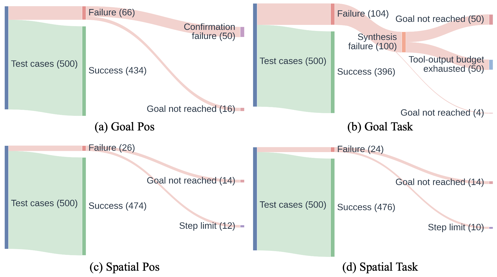
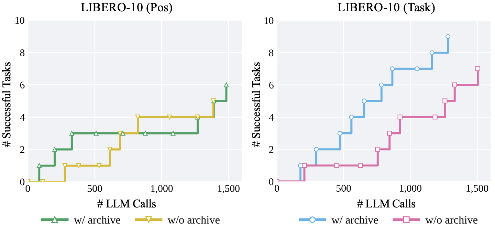
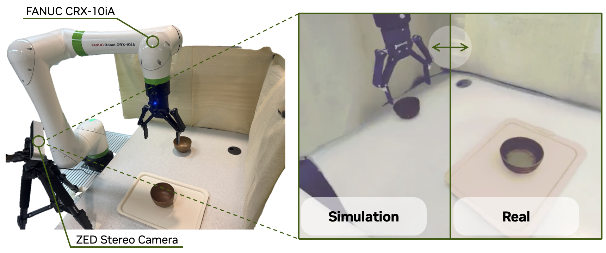
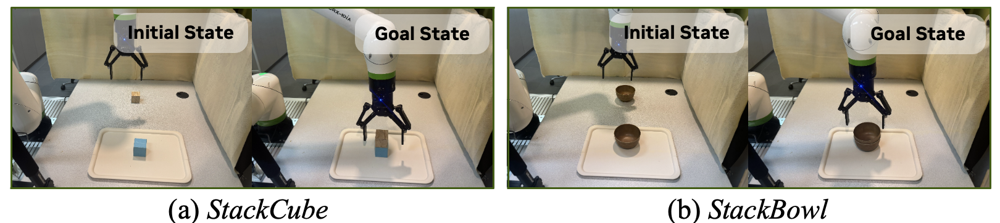

Put the pod in the coffee machine and close the lid
GR1 humanoid · Dexterous hands
From One Program to Robot Demonstrations at Scale
1 The University of Tokyo2 NVIDIA Japan
Generalist robot policies require large, diverse datasets, but collecting real-world demonstrations that cover many tasks and environments is costly. Simulation complements real-world collection through parallel execution and automatic resets. Producing successful demonstrations in simulation still requires task experts, which existing pipelines obtain from source demonstrations or manually written task programs. We present ORCAs (Orchestrated Coding Agents), a framework that constructs reusable task and motion planning (TAMP) experts from language instructions and privileged simulator state without source demonstrations. Coding agents inspect scene geometry, consult documentation, and use planning and execution tools to develop and repair each expert's task model, predicate tests, motion samplers, and trajectory checker. Archived code supports program authoring for new tasks, while validated programs generate demonstrations without further coding-model calls. ORCAs achieves 92.7% mean program success on LIBERO-PRO and higher success than CaP-Agent0 and RATs on four deformable manipulation and assembly tasks. Archive reuse improves final task coverage under both position and task perturbations with a fixed token budget. In a simulation reconstructed from a real-world workspace, ORCAs generates 1,000 demonstrations per task end to end in 110 min on average. Policies trained on the generated demonstrations achieve a mean success rate of 85% across two real-world manipulation tasks.
The video could not be loaded. You can open or download it using the links above.
LIBERO-PRO program success
Mean across six conditions · Opus 5Demonstrations per task
110 min mean, including program authoringReal-world policy success
Two tasks · 20 trials per taskHow ORCAs works
Write. Execute. Repair.
Then freeze the program and scale.
Read the task. Measure the scene.

The demonstration gallery
30 rollouts. Seven simulation suites.
Click any video for a closer look.
GR1 humanoid · Dexterous hands
Unitree G1 · Walk, carry, place
Bimanual YAM · Deformable bag
Franka · Two objects, one bowl
Franka · Held-out scene, seed 04
Mobile manipulator · Fridge to glass
LIBERO-Goal · Articulated drawer
Franka · Multi-object packing
GR1 humanoid · Two-hand handover
Franka · Held-out scene, seed 01
Unitree G1 · Walk, grasp, lift
Franka · Held-out scene, seed 04
Franka · Held-out scene, seed 01
Mobile manipulator · Counter to sink
GR1 humanoid · Pour, then carry
Franka · Pick and place
Franka · Grasping
Franka · Shelf retrieval
Franka · Pick and place
Unitree G1 · Walk and press
GR1 humanoid · Held-out scene, seed 02
Mobile manipulator · Push to close
LIBERO-Object · Task perturbation
LIBERO-Object · Held-out scene
LIBERO-Spatial · Held-out scene
LIBERO-Object · Position perturbation
LIBERO-Goal · Position perturbation
LIBERO-Goal · Position perturbation
LIBERO-Spatial · Position perturbation
LIBERO-Spatial · Position perturbation
Representative successful rollouts. Gallery footage is separate from the aggregate results reported in the paper, and some clips come from model versions newer than those evaluated there.
A validated program recomputes motions from each scene. Parallel simulators turn that reusable expert into a dataset.
This later visualization is separate from the manuscript’s timing study, which uses 64 parallel environments and collects RGB demonstrations. Playback speed is not a measured throughput improvement.
Frozen programs are evaluated on held-out states. Selected videos illustrate individual outcomes; the tables report aggregate evaluation results.
Object, Goal, and Spatial suites; position and task perturbations. 3,000 program evaluations per configuration on seeds 1–50, separate from development and validation.
† Published baseline results, as reproduced in Table I. CaP-Agent0 and ASPIRE use RGB-D perception; ORCAs directly accesses simulator poses and geometry. Model backbones and execution protocols also differ, so this is a system-level comparison.
| Method | Object Pos | Object Task | Goal Pos | Goal Task | Spatial Pos | Spatial Task | Mean |
|---|---|---|---|---|---|---|---|
| CaP-Agent0 † | 22 | 18 | 26 | 17 | 12 | 14 | 18.2 |
| ASPIRE † | 98 | 95 | 81 | 45 | 51 | 60 | 71.7 |
| ORCAs · Opus 5 | 100 | 100 | 87 | 79 | 95 | 95 | 92.7 |
| ORCAs · Opus 4.6 | 90 | 98 | 73 | 75 | 66 | 73 | 79.2 |
| w/o Research · Opus 5 | 97 | 100 | 77 | 86 | 88 | 93 | 90.2 |
| w/o Curriculum · Opus 5 | 100 | 100 | 80 | 70 | 94 | 86 | 88.3 |
| w/o Orchestrator · Opus 5 | 100 | 98 | 78 | 56 | 74 | 88 | 82.3 |

Four tasks spanning SoftMimicGen and Factory. All three methods use GPT-5.6 sol with the same task definitions, control commands, retry limits, and benchmark success checks.
Successful trial Unsuccessful trial · Manuscript Table II
| Method | Franka Rope | Humanoid Teddy | Peg Insert | Gear Mesh |
|---|---|---|---|---|
| CaP-Agent0 | 0/30 | 0/30 | 10/30 | 1/30 |
| RATs | 0/30 ‡ | 0/30 ‡ | 13/30 | 0/30 ‡ |
| ORCAs | 26/30 | 12/30 | 29/30 | 28/30 |
‡ RATs did not solve these tasks during development and was assigned zero without held-out evaluation. ORCAs queries simulator geometry. These are manuscript aggregates; gallery clips are representative saved runs, not a reconstruction of this table.
Agents retrieve and adapt verified components from source suites and earlier LIBERO-10 tasks. Both conditions use Opus 5 and a 20M-token authoring budget.
Number of successful tasks out of ten at the end of the budget. Reuse improves final coverage in both settings; the position curves cross during development, so the advantage does not hold at every intermediate call count.

SmolVLA policies trained on ORCAs demonstrations are evaluated on a FANUC CRX-10iA.


Stack the wood cube on the blue cube.
Stack the table bowl on the tray bowl.
A reconstructed workspace connects simulation to the physical setup. Each task uses 1,000 generated demonstrations; real-world success is assessed by human judgment.
| Task | Program authoring | Parallel collection | End to end |
|---|---|---|---|
| StackCube | 46 min | 50 min | 96 min |
| StackBowl | 50 min | 74 min | 124 min |
64 parallel simulation environments on one NVIDIA RTX PRO 6000 Blackwell (96 GB). StackBowl collection time includes rejected rollouts. The generated trajectory checker selects demonstrations. The 110-minute headline is the mean of 96 and 124 minutes.
What comes next
ORCAs provides a path from language instructions to reusable simulation experts and training data. Extending that path requires prepared environments, dependable validation, and broader real-world evaluation.